Convert4 é um conversor das quatro bases numéricas mais comuns: binário, decimal, hexadecimal e octal.
HTML5CSS3JSNode.jsRender
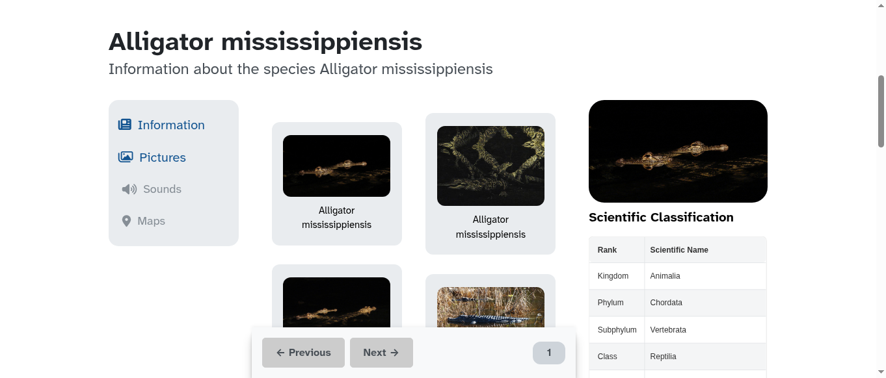
CrocodilePlanet (Inglês)
CrocodilePlanet is a web project that showcases detailed information about 19 of the 23 species in the Crocodylia order, including habitat, characteristics, and behavior, presented in a clean and intuitive interface.
HTML5CSS3JSPythonNode.jsRender
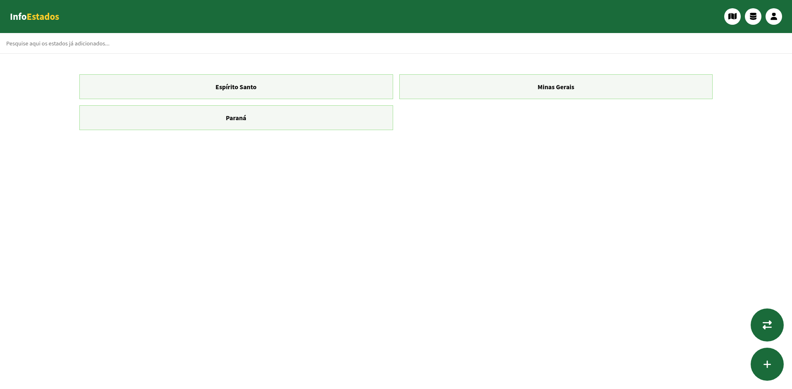
InfoEstados
Projeto Full Stack usando Node.js e Express para servidor, listas em C, Firebase Auth, Firestore, HTML5, CSS, JS e Bootstrap. O site mostra informações de economia, educação, território, trabalho e população dos estados brasileiros, incluindo capital e governador, com dados do IBGE em JSON.
HTML5CSS3JSCFirebaseNode.jsRender
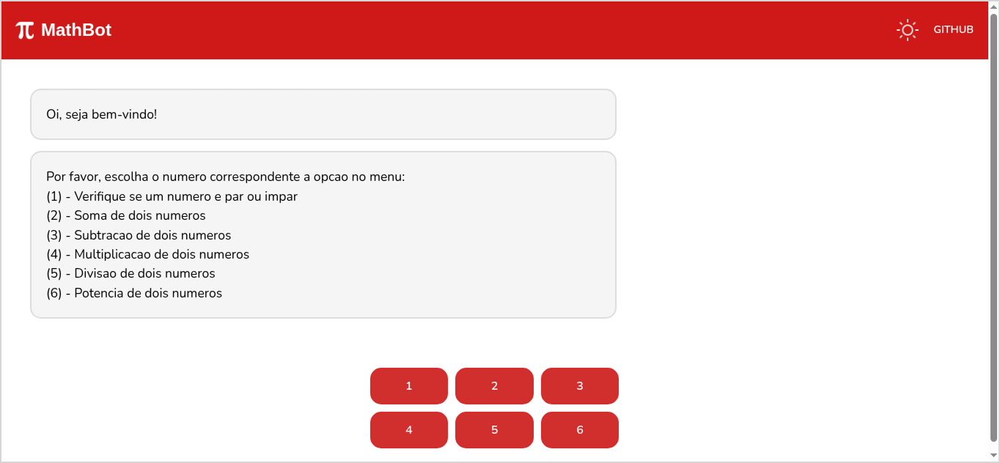
MathBot
MathBot é um chat bot voltado a resolver questões básicas de matemática.
HTML5CSS3JSPrologNode.jsRender
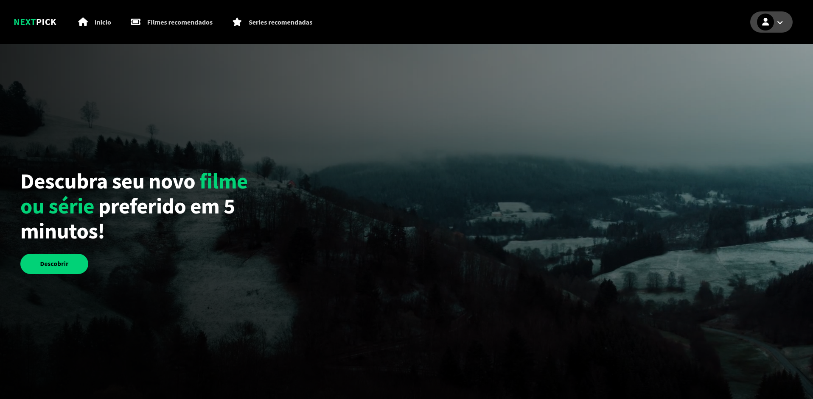
NextPick
NextPick é uma plataforma de recomendação de filmes e séries baseada na API do TMDB. Você pode pesquisar filmes, séries e pessoas, ver informações sobre diferentes obras, responder um questionário para receber sugestões personalizadas, salvar favoritos e muito mais.
HTML5CSS3JSFirebaseNode.jsRender
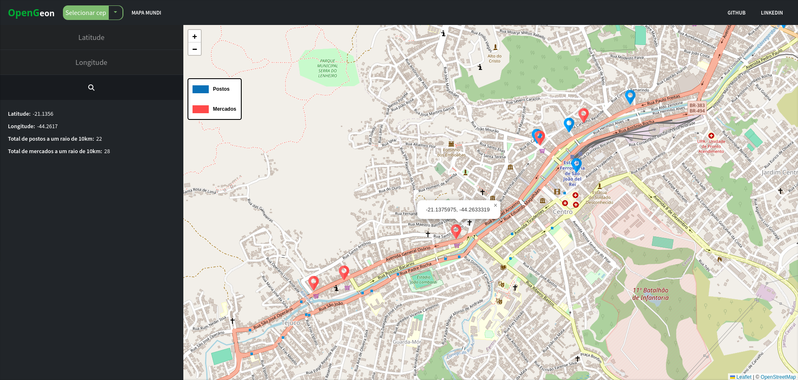
OpenGeon
OpenGeon é um projeto focado em localizar mercados e postos de gasolina em um raio de 10 km do usuário, ou qualquer área desejada. É possível ver a latitude, longitude e total de postos e mercados na aba lateral, ao lado do mapa.
HTML5CSS3JS
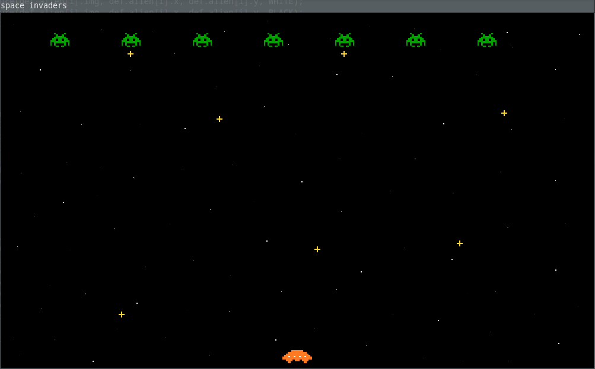
Space Invaders
Space Invaders é um clássico jogo de tiro em 2D lançado em 1978 pela empresa japonesa Taito. Nessa versão, o usuário controla uma nave espacial, que deve atirar nos alienígenas na parte superior da tela. A cada inimigo eliminado, a velocidade de movimentação dos aliens é multiplicada.
CRaylibMakefile
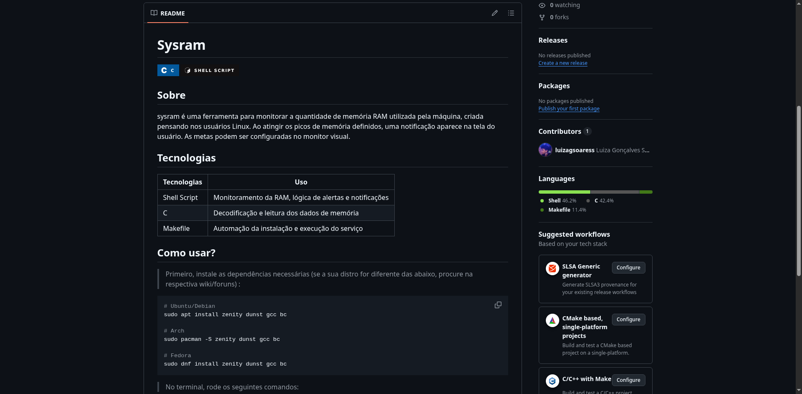
sysram
sysram é uma ferramenta para monitorar a quantidade de memória RAM utilizada pela máquina, criada pensando nos usuários Linux. Ao atingir os picos de memória definidos, uma notificação aparece na tela do usuário. As metas podem ser configuradas no monitor visual.
CSHMakefile
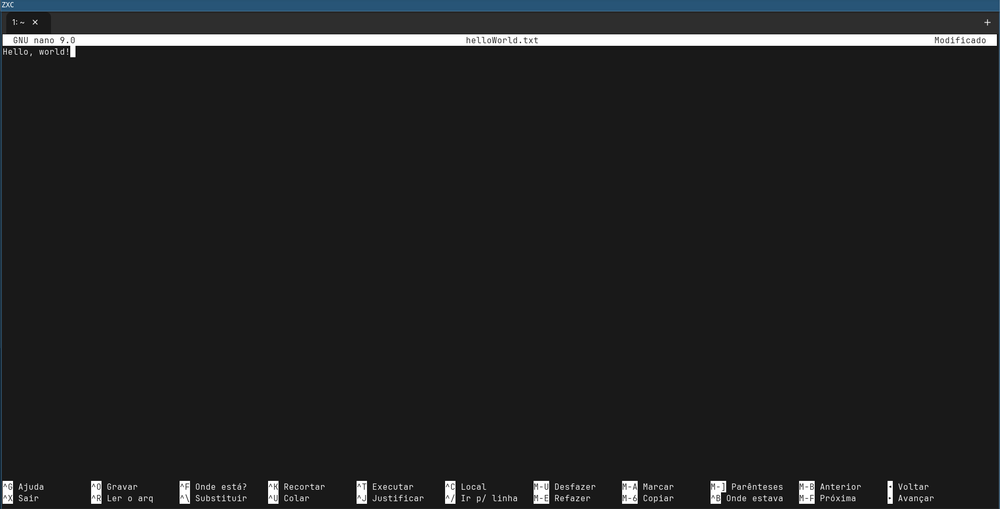
ZXC (Inglês)
ZXC is a lightweight custom Unix shell with a built-in GTK terminal interface, featuring tab support, AI integration via GROQ, and fully customizable colors through a local config file.
CMakefile
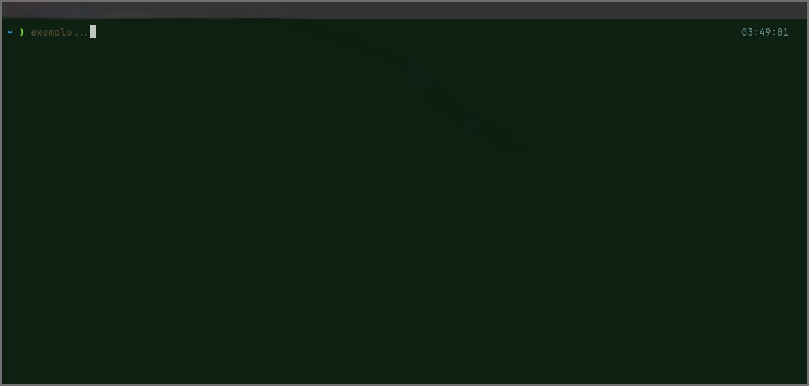
i3wm-wallpaper
Um pequeno script que altera os wallpapers a cada "shutdown" da máquina, no i3wm. Para cada wallpaper, o tema do computador é atualizado para se encaixar nas cores gerais da imagem.
Script.sh
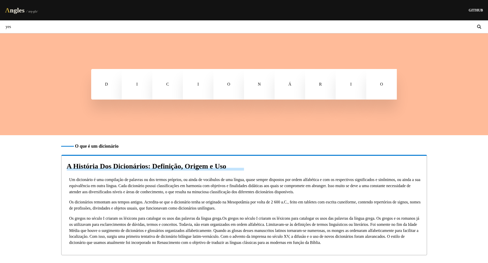
Λngles
Λngles é um dicionário inglês totalmente online, onde o usuário consegue pesquisar por palavras da língua inglesa e visualizar seus detalhes.
HTML5CSS3JSNode.jsRender
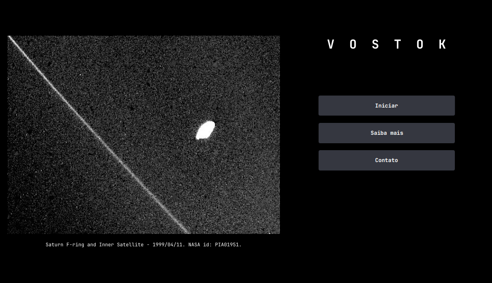
Vostok
Vostok é um projeto de software de código aberto, voltado a exibir de maneira acessível diversos dados da NASA, como imagens, erupções solares recentes, asteroides monitorados, etc.
JavaMavenNode.jsRender
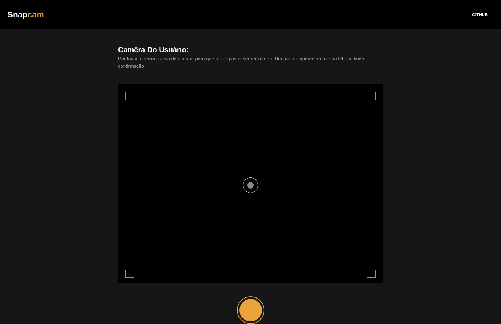
Snapcam
Tire fotos rápidas totalmente online pelo computador a qualquer momento. Todas as imagens são salvas por padrão como 'captura.png'.